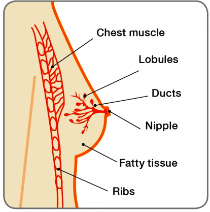
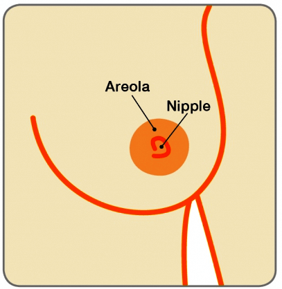

ബിനൈന് സ്തനാരോഗ്യ പ്രശ്നങ്ങള്
ഗൈനെക്കോമാസ്റ്റിയ
16 വയസ്സുള്ള ഒരു ആണ്കുട്ടിയായ തരുണിന് ഒരു വര്ഷമായി ഇടത് സ്തനത്തില് വേദനാരഹിതമായ ഒരു വളര്ച്ചയുള്ളതായി ശ്രദ്ധയില്പ്പെട്ടു. ഇത് നീന്തുന്ന സമയത്ത് അവന് അസ്വസ്ഥത ഉണ്ടാക്കുന്നു.
72 വയസ്സുള്ള ഭരത് എന്ന മുതിര്ന്ന വ്യക്തിക്ക് വലത് സ്തനത്തില് ഒരു മുഴയും തുടര്ച്ചയായ അസ്വസ്ഥതയും അനുഭവപ്പെടുന്നു.
സ്തനം

മുലക്കണ്ണ്

എന്താണ് ഗൈനെക്കോമാസ്റ്റിയ?.
പുരുഷ സ്തനത്തിലെ കോശത്തിലുണ്ടാകുന്ന വളര്ച്ചയാണ് ഗൈനെക്കോമാസ്റ്റിയ. ഇത് സാധാരണവും, ബിനൈനും (ക്യാന്സര് അല്ലാത്തത്) ആയ അവസ്ഥയാണ്. പ്രധാനമായും ആണ്കുട്ടികളെയും പ്രായമായ പുരുഷന്മാരെയുമാണ് ബാധിക്കുന്നതെങ്കിലും ഏത് പ്രായത്തിലുള്ള പുരുഷന്മാരെയും ഇത് ബാധിക്കാം. ഗൈനെക്കോമാസ്റ്റിയ വളരെ സാധാരണമായി കാണപ്പെടുന്നതാണെങ്കിലും ചില ആളുകള്, പ്രത്യേകിച്ച് ആണ്കുട്ടികള് ഒരു ശല്യമായി കാണുന്നതിനാല് ഇതിനെക്കുറിച്ച് കൂടുതലായി സംസാരിക്കാന് മടിക്കുന്നു. ഗൈനെക്കോമാസ്റ്റിയ സംബന്ധിച്ച് ആണ്കുട്ടികള്ക്ക് ഏറെ ഉത്കണ്ഠയും ആശങ്കയും അനുഭവപ്പെടും. മൂന്നില് രണ്ട് ആണ്കുട്ടികള്ക്കും ഗൈനെക്കോമാസ്റ്റിയ അനുഭവപ്പെടുമെങ്കിലും 90% കേസുകളും സ്വയം ഭേദമാകും.
ഗൈനെക്കോമാസ്റ്റിയയുടെ പ്രധാന കാരണങ്ങള്ആണ്കുട്ടികളില് പ്രായപൂര്ത്തി ആരംഭിക്കുന്നത് അവര് കൗമാരപ്രായത്തില് എത്തുമ്പോഴാണ്. എന്നിരുന്നാലും ചില ആണ്കുട്ടികള് 10 വയസ്സായിരിക്കുമ്പോള് തന്നെ മാറ്റങ്ങള് ഉള്ളതായി കണ്ടെത്തും. പ്രായപൂര്ത്തി ആകുന്നതോടെ ഈസ്ട്രജന്, ടെസ്റ്റോസ്റ്റീറോണ് എന്നീ ഹോര്മോണുകളില് വര്ദ്ധനവുണ്ടാകും. ഈസ്ട്രജന് സ്തനം വളര്ച്ചയെ ഉത്തേജിപ്പിക്കുകയും ടെസ്റ്റോസ്റ്റീറോണ് സ്തന വളര്ച്ച അവസാനിപ്പിക്കുകയും ചെയ്യും.
മറ്റ് മാറ്റങ്ങളും പ്രായപൂര്ത്തിയുമായി ബന്ധപ്പെട്ട് ഉണ്ടാകുമെങ്കിലും, ആണ്കുട്ടികള്ക്ക് മറ്റ് മാറ്റങ്ങളും പ്രായപൂര്ത്തിയുമായി ബന്ധപ്പെട്ട് ഉണ്ടാകുമെങ്കിലും, തങ്ങളുടെ സ്തനം വളരുന്നതായോ കടുപ്പം കുറയുന്നതായോ കണ്ടെത്തും. പ്രായപൂര്ത്തിയാകുമ്പോള് ശരീരത്തില് ടെസ്റ്റോസ്റ്റീറോണിനേക്കാള് ഈസ്ട്രജന് ഉണ്ടാവുകയും, അത് സ്തനത്തിലെ ടിഷ്യുവിന് മാറ്റം ഉണ്ടാക്കുകയും ചെയ്യുന്നതിനാലാണ് ഇത് സംഭവിക്കുന്നത്. ഈസ്ട്രജന്റ അളവ് ടെസ്റ്റോസ്റ്റീറോണിനേക്കാള് ഉയര്ന്നിരുന്നാല്, ധമനികളും ലോബ്യൂളുകളും വളരുകയും സ്തനങ്ങള് വലുതാകുകയും കൂടുതല് ശ്രദ്ധിക്കപ്പെടുകയും ചെയ്യും.
ഏകദേശം 15 വയസ്സോടെ, ടെസ്റ്റോസ്റ്റീറോണിന്റെ അളവ് ഈസ്ട്രജന്റെ അളവിനേക്കാള് ഉയര്ന്ന നിലയില് സ്ഥിരമാക്കപ്പെടും. ഇത് ഈസ്ട്രജന് സ്തനത്തിലെ ടിഷ്യുക്കളില് കൂടുതലായി ബാധിക്കുന്നത് തടയും. ഒരു പുരുഷന് 19 വയസ്സ് ആകുന്നതോടെ, അയാളുടെ സ്തനം അല്ലെങ്കില് സ്തനങ്ങള് സ്വഭാവികമായും ചുരുങ്ങാന് ആരംഭിക്കുകയും നിരപ്പാകുകയും ചെയ്യും.
പ്രായം വര്ദ്ധിക്കല്വ്യക്തിക്ക് പ്രായമാകുമ്പോള് ഈസ്ട്രജന് ഉത്പാദിപ്പിക്കുന്ന ശരീരത്തിലെ കൊഴുപ്പ് കൂടുതലായുണ്ടാകും. അതിന് പുറമേ, പ്രായം വര്ദ്ധിക്കുമ്പോള് ടെസ്റ്റോസ്റ്റീറോണ് ഉത്പാദിപ്പിക്കുന്ന അളവ് കുറയുകയും ചെയ്യും. ഈസ്ട്രജന്റെ തോത് വര്ദ്ധിക്കുകയും ടെസ്റ്റോസ്റ്റീറോണിന്റെ അളവ് കുറയുകയും ചെയ്യുന്നത് സ്തനം വലുതാകാന് കാരണമാകും. പിന്നീടുള്ള ജീവിതത്തില് വണ്ണം കൂടുന്നതിനാല് സ്തനത്തിന്റെ ഭാഗം കൂടുതല് ശ്രദ്ധിക്കപ്പെടുകയും, സ്തനങ്ങള് വലുതായതായി അനുഭവപ്പെടുകയും ചെയ്യും. ഇത് സ്യൂഡോ-ഗൈനെക്കോമാസ്റ്റിയ എന്നാണ് അറിയപ്പെടുന്നത്. അനേകം പുരുഷന്മാര് ഇതിനെ പ്രായം വര്ദ്ധിക്കുന്നതിന്റെ ഭാഗമായി സ്വീകരിക്കും.
മറ്റ് കാരണങ്ങള്ചില മരുന്നുകള്(പ്രിസ്ക്രിപ്ഷനുള്ളവയും നിയമ വിരുദ്ധമായവയും) ഗൈനെക്കോമാസ്റ്റിയക്ക് കാരണമാകാം. അവ ഈസ്ട്രജന് ഉള്ക്കൊള്ളുന്നവയാകാം. അവ ശരീരത്തില് വിതരണം ചെയ്യപ്പെടുന്ന ഹോര്മോണിന്റെ തോത് വര്ദ്ധിപ്പിക്കുകയോ അല്ലെങ്കില് ഈസ്ട്രജന്റേത് പോലുള്ള ഫലങ്ങളുണ്ടാക്കുകയും ചെയ്തേക്കാം. കന്നാബിസ് പോലുള്ള മരുന്നുകളുടെ കാര്യത്തില് ഇതാണ് സംഭവിക്കുക. ചില മരുന്നുകള് ടെസ്റ്റോസ്റ്റീറോണ് ഉത്പാദനത്തെ പൂര്ണ്ണമായും തടയുകയും ടെസ്റ്റോസ്റ്റീറോണ് വിതരണം ചെയ്യപ്പെടുന്ന തോത് കുറക്കുകയും ചെയ്യും.
പല തരത്തിലുള്ള പ്രിസ്ക്രൈബ്ഡ് മരുന്നുകളും ശരീരത്തിലെ ഹോര്മോണ് സന്തുലനത്തെ മാറ്റും. ഉയര്ന്ന രക്ത സമ്മര്ദ്ധത്തിന് അല്ലെങ്കില് ഹൃദയ സംബന്ധമായ പ്രശ്നങ്ങള്ക്ക് കഴിക്കുന്ന മരുന്നുകള്, മാനസികമായ ചില അവസ്ഥകള്, ഉദരത്തിലെ അള്സര്, ചില ക്യാന്സര് തെറാപ്പികള്, ചില ആന്റിബയോട്ടിക്കുകള് എന്നിവയും മസിലുകള് വളരാനായി കഴിക്കുന്ന മരുന്നുകളും(അനാബോളിക് സ്റ്റീറോയ്ഡ്സ്) ഗൈനെക്കോമാസ്റ്റിയക്ക് കാരണമാകാം.
ഔഷധ ഉത്പന്നങ്ങള്ചില ഹെര്ബല് സപ്ലിമെന്റുകളും ചില സൗന്ദര്യവര്ദ്ധക വസ്തുക്കളും ഈസ്ട്രജന് അടങ്ങിയതാണ്. ഇത് കുട്ടികളിലും മുതിര്ന്നവരിലും ശരീരത്തില് വിതരണം ചെയ്യപ്പെടുന്ന ഹോര്മോണിന്റെ തോത് വര്ദ്ധിപ്പിക്കുകയോ അല്ലെങ്കില് ഈസ്ട്രജന് സമാനമായ സ്വാധീനം ചെലുത്തുകയോ ചെയ്യും. ഒരിക്കല് അവ ഉപയോഗിക്കുന്നത് നിങ്ങള് അവസാനിപ്പിച്ചാല് അവയുടെ സ്വാധീനം നിലക്കുകയും സ്തനത്തിലെ ടിഷ്യുക്കള് സാധാരണ നിലയിലാകുകയും ചെയ്യും.
ഭക്ഷണക്രമവും ശരീരഭാരവുംഒരു വ്യക്തിയുടെ ശരീരത്തില് എത്ര അധികം കൊഴുപ്പ് സെല്ലുകള് ഉണ്ടോ, അത്രത്തോളം ഈസ്ട്രജന് അവ ഉത്പാദിപ്പിക്കും. ഇതിന്റെ ഫലമായി സ്തനത്തിലെ ടിഷ്യുക്കള് വളരാനിടയാകും. നന്നായി സന്തുലനപ്പെടുത്തിയ ഒരു ഭക്ഷണക്രമവും വ്യായാമവും ആരോഗ്യകരമായ ശരീരഭാരം നിലനിര്ത്തുന്നതില് പ്രധാനപ്പെട്ടതാണ്.
മദ്യംമദ്യം അമിതമായി കഴിക്കുന്നത് കരളിനെ പല തരത്തിലും ബാധിക്കുകയും പല പ്രശ്നങ്ങള്ക്കും കാരണമാകുകയും ചെയ്യും. വലിയ അളവിലുള്ള മദ്യം കരളിനെ ഉത്തേജിപ്പിക്കുകയും ഹോര്മോണ് അസന്തുലനാവസ്ഥ സൃഷ്ടിക്കുകയും ചെയ്യും. ടെസ്റ്റോസ്റ്റീറോണ് വിതരണം ചെയ്യപ്പെടുന്നത് കുറയുകയും ഈസ്ട്രജന്റെ തോത് വര്ദ്ധിക്കുകയും ചെയ്താല് (കരള് വിതരണം ചെയ്യപ്പെടുന്ന ഈസ്ട്രജനെ വിഘടിപ്പിക്കുന്നത് അവസാനിപ്പിച്ചാല്) സ്തനത്തിലെ ടിഷ്യുവിന് വളരാനാവും എന്നാണ് ഇതിന്റെ അര്ത്ഥം.
ചില സാഹചര്യങ്ങളില് എന്തുകൊണ്ടാണ് ഒരാള്ക്ക് ഗൈനെക്കോമാസ്റ്റിയ ഉണ്ടാകുന്നത് എന്ന് പറയുന്നത് സാധ്യമാകില്ല. എന്നിരുന്നാലും അത് പരിഹരിക്കുന്നതിനുള്ള ചികിത്സാ മാര്ഗ്ഗങ്ങള് കാരണം അറിവ് ഉണ്ടായിരിക്കുമ്പോഴത്തേതിന് സമാനമാണ്.ഗെനെക്കോമാസ്റ്റിയയുടെ ലക്ഷണങ്ങള് എന്തൊക്കെയാണ്?
Theമുലക്കണ്ണിന് തൊട്ടു പുറകിലായുള്ള സ്തനത്തിലെ ടിഷ്യുവിന്റെ ഉറച്ച വളര്ച്ച മുതല് സ്ത്രീയുടേതിന് സമാനമായ സ്തനത്തിന്റേത് പോലുള്ള വലിയ വളര്ച്ച വരെയാകാം ഗൈനെക്കോമാസ്റ്റിയയുടെ ലക്ഷണങ്ങള്. ഗൈനെക്കോമാസ്റ്റിയ ഒന്ന് അല്ലെങ്കില് രണ്ട് സ്തനങ്ങളേയും ബാധിച്ചേക്കാം. ഈ ഭാഗം സ്പര്ശിക്കുമ്പോള് കടുപ്പം കുറഞ്ഞത് അല്ലെങ്കില് വേദനാജനകമാകാം.
ശരിക്കുള്ള ഗൈനെക്കോമാസ്റ്റിയ(സ്തനത്തിലെ ടിഷ്യുവിന്റെ വളര്ച്ച മൂലം സംഭവിച്ചത്) സ്യൂഡോ –ഗൈനെക്കോമാസ്റ്റിയയില് നിന്ന് വ്യത്യസ്ഥമാണ്. അത് കൊഴുപ്പ് ടിഷ്യുവിന്റെ ഒരു വളര്ച്ചയാണ്. എന്നിരുന്നാലും ഗൈനെക്കോമാസ്റ്റിയ രണ്ടിന്റെയും സമ്മിശ്ര രൂപവുമാകാം.
ആണ്കുട്ടികളിലെ സ്തനത്തിന്റെ വളര്ച്ചസ്തനത്തിലെ ടിഷ്യുക്കള് ഗര്ഭപാത്രത്തിലായിരിക്കുമ്പോള് തന്നെ വികസിക്കുന്നു. ഈ സമയത്ത് സ്തനത്തില് ചെറിയ ശാഖകളായുള്ള കുഴലുകള്(ഡക്ട്സ്) മുലക്കണ്ണിന് പിന്നിലായി രൂപം കൊള്ളും. ആണ്കുട്ടി കൗമാരത്തിലും പ്രായപൂര്ത്തിയിലും എത്തുന്നത് വരെ അവരുടെ സ്തനത്തിന്റെ ടിഷ്യുക്കള് പെണ്കുട്ടികളുടേതിന് സമാനമായിരിക്കും. എന്നിരുന്നാലും അവര് പ്രായപൂര്ത്തിയാകുമ്പോള് വര്ദ്ധിച്ച ഹോര്മോണ് തോത് സ്തനത്തിലെ ടിഷ്യുക്കളുടെ കൂടുതലായ വികാസത്തെ ബാധിക്കും.
പെണ്കുട്ടികളില്, ഈസ്ട്രജന് ഹോര്മോണ് സ്തനം വളരാനും പാലുത്പാദിപ്പിക്കുന്ന ഗ്രന്ഥികള് (ലോബ്യൂള്സ്) ധമനികളുടെ അന്ത്യഭാഗത്ത് രൂപപ്പെടാനും കാരണമാകുന്നു. അതുകൊണ്ട് സ്ത്രീകളുടെ സ്തനം മുലപ്പാലിനെ മുലക്കണ്ണ് വരെ കൊണ്ടുപോകാന് കഴിവുള്ളതാണ്.
ആണ്കുട്ടികളിലും പ്രായപൂര്ത്തിയാകുന്ന സമയത്ത് ഉയര്ന്ന തോതില് ഈസ്ട്രജന് ഉണ്ടാവും. എന്നാല് അവരുടെ കൗമാരക്കാലത്തിന്റെ അവസാന വര്ഷങ്ങളില് അവരില് സ്വഭാവികമായും ടെസ്റ്റോസ്റ്റീറോണിന്റെ അളവ് കൂടുതലായിരിക്കും. ഇത് ഈസ്ട്രജന്റെ സ്തനത്തിന് മുകളിലുള്ള സ്വാധീനത്തെ അവസാനിപ്പിക്കുകയും സ്തനം നിരപ്പാവുകയും ചെയ്യും.
ഗൈനെക്കോമാസ്റ്റിയ എങ്ങനെയാണ് നിര്ണ്ണയിക്കപ്പെടുന്നത്?
ഒരു സ്പെഷ്യലിസ്റ്റ് നടത്തുന്ന ക്ലിനിക്കല് സ്തന പരിശോധനയും രണ്ട് സ്തനങ്ങളിലുമുള്ള അള്ട്രാസൗണ്ട് സ്കാനിങ്ങും അനിവാര്യമാണ്. ഈ പ്രാഥമികമായ വിലയിരുത്തലിനെ അടിസ്ഥാനമാക്കി, സ്പെഷ്യലിസ്റ്റ് ഒരു മാമ്മോഗ്രാമിന് (സ്തനത്തിന്റെ എക്സ്റേ) പ്രത്യേകിച്ച് പുരുഷന് പ്രായമായിട്ടുണ്ടെങ്കില് നീഡില് ബയോപ്സിയും ആവശ്യപ്പെടും (FNAC/കോര് നീഡില് ബയോപ്സി).
കാരണം ഗൈനെക്കോമാസ്റ്റിയ ഹെപ്പര്തൈറോയ്ഡിസം പോലുള്ള മറ്റ് പ്രശ്നങ്ങളുടെ ലക്ഷണമാകാം (ഓവറാക്ടീവ് തൈറോയ്ഡ് ഗ്രന്ഥി), സ്പെഷ്യലിസ്റ്റ് കഴുത്ത്, അടിവയര്(ബെല്ലി), ടെസ്റ്റിക്കിള്സ് എന്നിവയും പരിശോധിക്കാന് ആവശ്യപ്പെട്ടേക്കാം. ലിവര് ഫങ്ങ്ഷന് ടെസ്റ്റ്, ആല്ഫ ഫെറ്റോ പ്രോട്ടീന്, ബി എച്ച്സിജി പോലുള്ള ബ്ലഡ് ടെസ്റ്റുകളും ചെയ്യേണ്ടി വരാം.
ഗൈനെക്കോമാസ്റ്റിയക്കുള്ള ചികിത്സ എന്താണ്?
മിക്കവാറും കേസുകളിലും, പ്രശ്നം സ്ഥിരീകരിക്കുകയാണ് ആവശ്യമായിട്ടുള്ള ഏക കാര്യം. പ്രത്യേകമായ ചികിത്സകള് ശുപാര്ശ ചെയ്യുന്നില്ല. ചില ആളുകള്ക്ക്, ഗൈനെക്കോമാസ്റ്റിയയുടെ കാരണം നീക്കം ചെയ്യുന്നതിനായി (അതായത് മരുന്നില് മാറ്റം വരുത്തുക, ശരീരത്തിലെ അമിതമായ കൊഴുപ്പ് കുറയ്ക്കുക അല്ലെങ്കില് മദ്യത്തിന്റെ ഉപയോഗം കുറയ്ക്കുക) ആകെ വേണ്ടത് സ്തനത്തിലെ അധികമായുള്ള ടിഷ്യു ചുരുക്കുകയാണ്. ചുരുക്കം ആളുകള്ക്ക് സ്പെഷ്യലിസ്റ്റ് നിശ്ചയിക്കുന്നത് പ്രകാരം (ഡാനാസോള്/ടാമോക്സിഫെന്) ചുരുങ്ങിയ കാലത്തേക്ക് ചികിത്സകള് ആവശ്യമായി വരും.
പൊതുവെ, ജീവിത ശൈലിയിലുള്ള മാറ്റങ്ങള്/അല്ലെങ്കില് ചികിത്സകള് വഴി ഗൈനെക്കോമാസ്റ്റിയക്ക് മാറ്റം വന്നിട്ടില്ലെങ്കില് സര്ജറി മാത്രമാണ് ശുപാര്ശ ചെയ്യുന്നത്. അല്ലെങ്കില് ഏറെക്കാലം നിങ്ങളോടൊപ്പം ഇതുണ്ടാവുകയും നിങ്ങളുടെ ജീവിത നിലവാരത്തെ ബാധിക്കുകയും ചെയ്യും.
ഒരു മാര്ഗ്ഗമായി സര്ജറി നടത്തുന്നതിന് മുമ്പ് സ്പെഷ്യലിസ്റ്റ് സംഭവ്യമായ ആപത്തുകളെക്കുറിച്ച് ചര്ച്ച ചെയ്യും. കാരണം ഗൈനെക്കോമാസ്റ്റിയക്ക് സര്ജറി നടത്തുന്നത് ശരിയായിട്ടുള്ള മാര്ഗ്ഗമല്ല. ഓപ്പറേഷന്റെ ടൈപ്പ് ഗൈനെക്കോമാസ്റ്റിയയുടെ വലുപ്പത്തെയും സ്തനത്തിന്റെ ഭാഗത്ത് അധികമായുള്ള ചര്മ്മത്തെയും ആശ്രയിച്ചിരിക്കുന്നു. ഇതിന്റെ ലക്ഷ്യം സാധാരണയായുള്ള പുരുഷന്റെ സ്തനത്തിന്റെ വലുപ്പം പുനസ്ഥാപിക്കുകയാണ്. കൂടാതെ ചിലപ്പോള് ഒന്നിലധികം ഓപ്പറേഷനുകള് ആവശ്യമായി വരും.
ലിപോസക്ഷന് (രോഗബാധിതമായ ഭാഗത്ത് നിന്ന് കൊഴുപ്പ് നീക്കം ചെയ്യുന്ന ശസ്ത്രക്രിയ) ഏറ്റവും സാധാരണമായ ഒരു ചികിത്സാരീതിയാണ്. ഇത് സ്വയമേവയുള്ള ഒരു ചികിത്സാ നടപടിയോ അല്ലെങ്കില് അതേ സമയം തന്നെ സ്തനം ചുരുക്കുന്നതിനുള്ള ഓപ്പറേഷനോ ആണ് (റിഡക്ഷന് മാമ്മോപ്ലാസ്റ്റി എന്ന് അറിയപ്പെടുന്നു). ഒരു ബ്രെസ്റ്റ് റിഡക്ഷന് ലിപോസക്ഷനില്ലാതെയും ചെയ്യാനാവും. കാരണം മേല്പറഞ്ഞ എല്ലാ നടപടിക്രമങ്ങളും അല്പ്പം സ്തന ടിഷ്യുക്കള് അവശേഷിപ്പിക്കുകയും, ഗൈനെക്കോമാസ്റ്റിയ തിരികെ വരുകയും ചെയ്യും.
ഗൈനെക്കോമാസ്റ്റിയ അത് ബാധിക്കപ്പെടുന്നവരെ അസ്വസ്ഥപ്പെടുത്തുന്നതും, നിരാശപ്പെടുത്തുന്നതും ഒറ്റപ്പെടുത്തുന്നതുമായ അനുഭവമാണ്. പ്രായപൂര്ത്തിയാകുകയും, മറ്റ് ശാരീരിക മാറ്റങ്ങളുമായി സംഘര്ഷത്തിലേര്പ്പെടുകയും ചെയ്യുന്ന ആണ്കുട്ടികള് തങ്ങളുടെ വളരുന്ന അല്ലെങ്കില് വേദനയുണ്ടാക്കുന്ന സ്തനത്തെ സംബന്ധിച്ച് ചര്ച്ച ചെയ്യുന്നത് വിഷമകരമായി കണക്കാക്കും.
ഗൈനെക്കോമാസ്റ്റിയ ഉള്ളത് സ്തനാര്ബുദം ബാധിക്കാനുള്ള സാധ്യത വര്ദ്ധിപ്പിക്കില്ല. എന്നിരുന്നാലും പുരുഷന്മാര്ക്ക് “സ്തനസംബന്ധമായ അവബോധം” ഉണ്ടായിരിക്കുന്നത് പ്രധാനമാണ്. കൂടാതെ സ്തനത്തില് എന്തെങ്കിലും പുതിയ മാറ്റങ്ങള് ശ്രദ്ധയില്പ്പെട്ടാല് അത് സ്പെഷ്യലിസ്റ്റിനെ അറിയിക്കുകയും ചെയ്യണം.
സ്തനങ്ങളെ സംബന്ധിച്ച ബോധവത്കരണം – 4 പോയിന്റ് കോഡ്